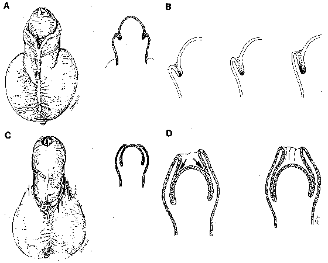
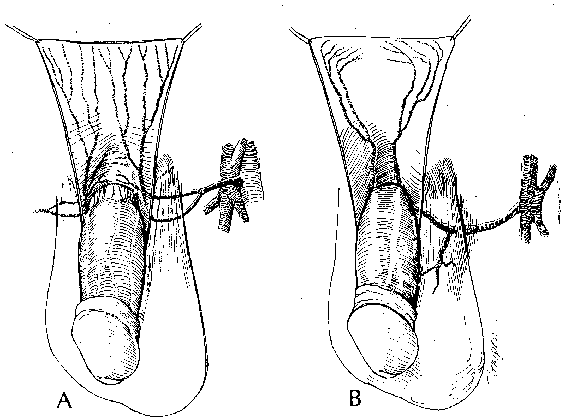
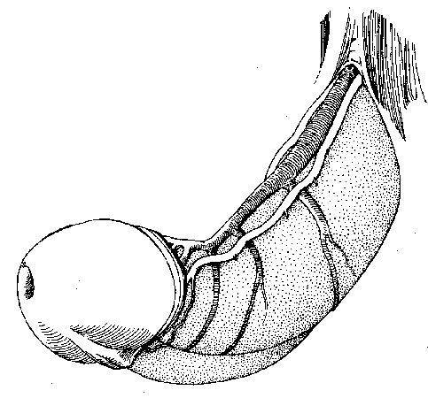
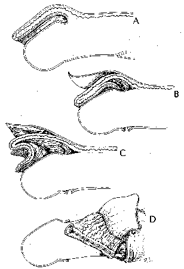
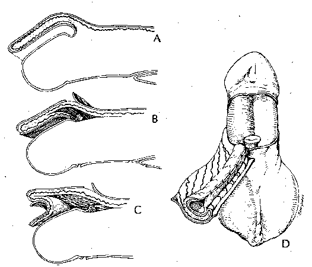

Figures from Hinman, 1991 [J. Urology, vol. 145, no. 6, June 1991, 1233-5].

Fig. 1. A, formation of preputial fold. B, ingrowth of glanular lamella. C, advance of prepuce by mesenchymal proliferation. D, separation of epithelial layer between prepuce and glans.

Fig. 2. A, arterial supply to prepuce. B, venous drainage of prepuce.

Fig. 3. Blood supply to frenulum.

Fig. 4. Single-faced island flap. A, blood supply follows contour of prepuce. B and C, dissection of island flap. D, formation of tube.

Fig. 5. Double-faced island flap. A, blood supply. B, division of skin at 3 sites. C, pedicle supplying both portions of flap. D, inner tube covered by vascularized skin.